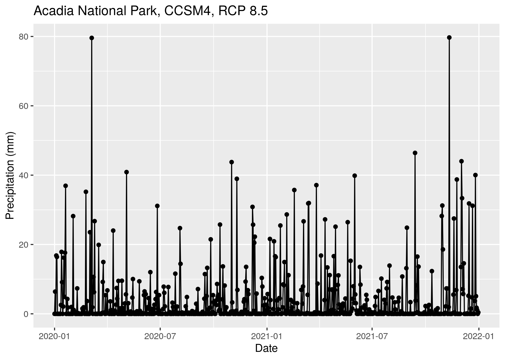

The goal of cst is to provide easy climate data access (MACA v2) to support climate scenario planning. This package allows you to:
- Quickly acquire climate data subsets for a spatial region of interest, with first class support for US National Parks
- Summarize climate data at daily timesteps, and compute derived quantities
- Contrast reference and target time periods to understand differences in climate over time, and
- Easily work with climate data, without having to worry about the details of how it is stored or formatted
Installation
Install the development version of cst from GitHub with:
This package also has some python dependencies. We recommend using conda (preferably miniconda) to simplify the installation process. Python dependencies can be installed as follows:
Quickstart guide
To acquire daily precipitation data for Acadia National Park for a subset of climate models, you can use the cstdata() function:
Then, download some data using the cstdata() function.
d <- cstdata(park = "Acadia National Park", parameters = "pr",
years = c(2020, 2021), models = "CCSM4", scenarios = "rcp85")This gives you a data frame with paths to local climate data files:
str(d)
#> Classes 'tbl_df', 'tbl' and 'data.frame': 1 obs. of 13 variables:
#> $ local_file : chr "pr_acadia_national_park_CCSM4_r6i1p1_rcp85_macav2metdata_2020_2021_daily.nc"
#> $ local_path : chr "/home/mjoseph/acadia_national_park/pr_acadia_national_park_CCSM4_r6i1p1_rcp85_macav2metdata_2020_2021_daily.nc"
#> $ model : chr "CCSM4"
#> $ parameter : chr "pr"
#> $ rcp : chr "rcp85"
#> $ ensemble : chr "r6i1p1"
#> $ year1 : num 2020
#> $ year2 : num 2021
#> $ area_name : chr "acadia_national_park"
#> $ units : chr "mm"
#> $ full_varname : chr "Precipitation"
#> $ internal_varname: chr "precipitation"
#> $ parameter_long : chr "precipitation"And, you can also summarize the daily data by computing a spatial average over the region of interest:
df <- cst_df(d, ncores = 2)
#> Computing spatial averages...
#> Generating climate data.frame...
str(df)
#> Classes 'tbl_df', 'tbl' and 'data.frame': 731 obs. of 6 variables:
#> $ rcp : chr "rcp85" "rcp85" "rcp85" "rcp85" ...
#> $ date : Date, format: "2020-01-01" "2020-01-02" ...
#> $ model : chr "CCSM4" "CCSM4" "CCSM4" "CCSM4" ...
#> $ ensemble : chr "r6i1p1" "r6i1p1" "r6i1p1" "r6i1p1" ...
#> $ area_name: chr "acadia_national_park" "acadia_national_park" "acadia_national_park" "acadia_national_park" ...
#> $ pr : num 0 4.7804 0.0497 16.9338 18.5549 ...Because this is a data.frame, you can use all of the normal data visualization and processing functionality in R, e.g.,
df %>%
ggplot(aes(date, pr)) +
geom_point() +
geom_line(alpha = .1) +
xlab("Date") +
ylab("Precipitation (mm)") +
ggtitle("Acadia National Park, CCSM4, RCP 8.5")
Dive deeper
This is just a small glimpse at what you can do with the cst package. For more, see Getting started with the Climate Scenarios Toolbox.
Development instructions
Building documentation
The vignettes in this package are pre-rendered because they take a while to execute. The Makefile contains instructions for rendering the vignettes, as well as the documentation, README.md file, and pkgdown website. To build the documentation, execute the following command from the terminal:
Meta
- Please report any issues or bugs, after reading our contribution guidelines, and the Contributor Code of Conduct.
- License: GPL-3
- See
citation("cst")in R to cite this package in publications.